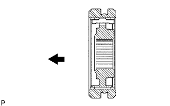

ВЫХОДНОЙ ВАЛ > ПОВТОРНАЯ СБОРКА |
| 1. INSTALL 3RD GEAR NEEDLE ROLLER BEARING |
Coat the needle roller bearing with gear oil and install it to the output shaft.
| 2. INSTALL 3RD GEAR |
 |
Coat the 3rd gear with gear oil and install it to the output shaft.
| 3. INSTALL NO. 1 SYNCHRONIZER RING |
 |
Coat the No. 1 synchronizer ring with gear oil and install it to the 3rd gear.
| 4. INSTALL NO. 2 TRANSMISSION CLUTCH HUB |
|  |
Coat the hub sleeve with gear oil and install it to the clutch hub.
 | Front |
Install the 3 synchromesh shifting keys to the clutch hub with the 2 synchromesh shifting key springs.
Using SST and a press, install the No. 2 clutch hub to the output shaft.
Select a clutch hub shaft snap ring that will allow minimal axial play.
| Mark | Thickness |
| C-1 | 1.75 to 1.80 mm (0.0689 to 0.0709 in.) |
| D | 1.80 to 1.85 mm (0.0709 to 0.0728 in.) |
| D-1 | 1.85 to 1.90 mm (0.0728 to 0.0748 in.) |
| E | 1.90 to 1.95 mm (0.0748 to 0.0768 in.) |
| E-1 | 1.95 to 2.00 mm (0.0768 to 0.0787 in.) |
| F | 2.00 to 2.05 mm (0.0787 to 0.0807 in.) |
| F-1 | 2.05 to 2.10 mm (0.0807 to 0.0827 in.) |
 |
Using a snap ring expander, install the snap ring.
| 5. INSPECT 3RD GEAR THRUST CLEARANCE |
 |
Using a feeler gauge, measure the thrust clearance.
| *1 | 3rd Gear |
| 6. INSTALL 2ND GEAR NEEDLE ROLLER BEARING |
Coat the needle roller bearing with gear oil and install it to the output shaft.
| 7. INSTALL 2ND GEAR |
Coat the 2nd gear with gear oil and install it to the output shaft.
| 8. INSTALL NO. 2 SYNCHRONIZER RING (for 2nd Gear) |
Coat the No. 2 synchronizer ring with gear oil and install it to the 2nd gear.
| 9. INSTALL NO. 1 TRANSMISSION CLUTCH HUB |
Coat the reverse gear with gear oil and install it to the clutch hub.
| Front |
Install the 3 synchromesh shifting keys to the clutch hub with the 2 synchromesh shifting key springs.
 |
Using SST and a press, install the clutch hub to the output shaft.
| 10. INSTALL NO. 1 SYNCHRONIZER RING (for 1st Gear) |
Coat the synchronizer ring with gear oil and install it to the No. 1 clutch hub.
| 11. INSTALL 1ST GEAR BEARING INNER RACE LOCK BALL |
Coat the lock ball with gear oil and install it to the output shaft.
| 12. INSTALL 1ST GEAR BEARING INNER RACE |
Coat the needle roller bearing with gear oil.
Install the inner race and needle roller bearing to the 1st gear.
| *1 | 1st Gear Bearing Inner Race |
| *2 | 1st Gear Needle Roller Bearing |
| *3 | 1st Gear |
| 13. INSTALL 1ST GEAR |
Coat the 1st gear with gear oil and install it to the output shaft.
| 14. INSTALL OUTPUT SHAFT CENTER BEARING |
Using SST and a press, install the center bearing to the output shaft.
| 15. INSPECT 1ST GEAR THRUST CLEARANCE |
 |
Using a dial indicator, measure the thrust clearance.
| *1 | 1st Gear |
| 16. INSTALL 5TH GEAR |
 |
Using SST and a press, install the 5th gear to the output shaft.
Select a snap ring that will allow minimal axial play.
| Mark | Thickness |
| A | 2.67 to 2.72 mm (0.1052 to 0.1070 in.) |
| B | 2.73 to 2.78 mm (0.1075 to 0.1094 in.) |
| C | 2.79 to 2.84 mm (0.1099 to 0.1118 in.) |
| D | 2.85 to 2.90 mm (0.1123 to 0.1141 in.) |
| E | 2.91 to 2.96 mm (0.1146 to 0.1165 in.) |
| F | 2.97 to 3.02 mm (0.1170 to 0.1188 in.) |
| G | 3.03 to 3.08 mm (0.1193 to 0.1212 in.) |
| H | 3.09 to 3.14 mm (0.1217 to 0.1236 in.) |
| J | 3.15 to 3.20 mm (0.1241 to 0.1259 in.) |
| K | 3.21 to 3.26 mm (0.1264 to 0.1283 in.) |
| L | 3.27 to 3.32 mm (0.1288 to 0.1307 in.) |
Using a brass bar and hammer, tap on the snap ring.
| 17. INSPECT 5TH GEAR THRUST CLEARANCE |
Using a dial indicator, measure the thrust clearance.
| *1 | 5th Gear |
| 18. INSPECT 3RD GEAR THRUST CLEARANCE |
|
Using a feeler gauge, measure the thrust clearance.
| *1 | 3rd Gear |
| 19. INSPECT 2ND GEAR THRUST CLEARANCE |
 |
Using a dial indicator, measure the thrust clearance.
| *1 | 2nd Gear |
| 20. INSPECT 1ST GEAR THRUST CLEARANCE |
|
Using a dial indicator, measure the thrust clearance.
| *1 | 1st Gear |
| 21. INSPECT 3RD GEAR RADIAL CLEARANCE |
 |
Using a dial indicator, measure the radial clearance.
| 22. INSPECT 2ND GEAR RADIAL CLEARANCE |
 |
Using a dial indicator, measure the radial clearance.
| 23. INSPECT 1ST GEAR RADIAL CLEARANCE |
Using a dial indicator, measure the radial clearance.